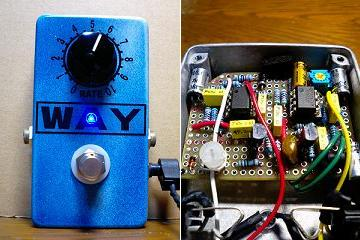
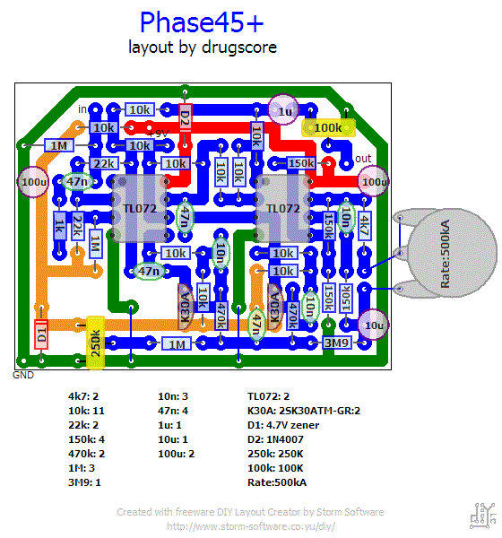
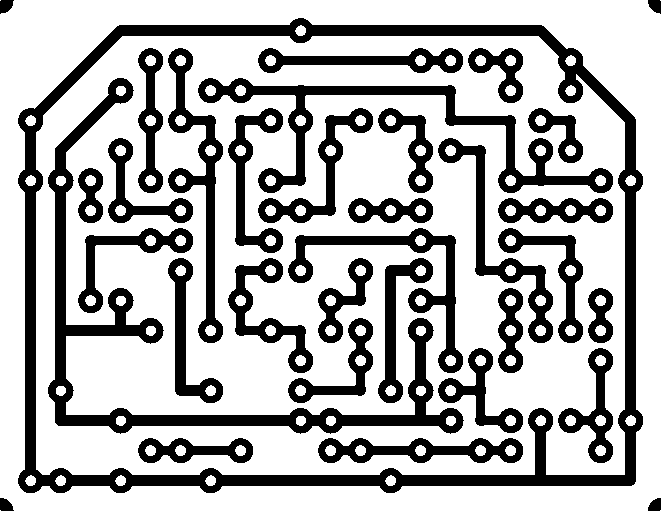

MXR PHASE45改
2009年02月22日 カテゴリー：自作エフェクター（アナログ）

何だか最近作り直しが多かったんですが、思いつきでフェイズ45を作ってみました。松美庵さんのサイトのモディファイを加えようと思って試してみましたが、やっぱりシンプルなのが一番いいみたいで1ノブです。スイッチをつける場合高さを低くしなければいけないので、電解コンデンサを寝かせてみましたが結局スイッチはつけずじまいでした。
▽回路図
TONEPAD Phase 45 プロジェクトファイル ダウンロードページ
▽レイアウト

▽PCB（横55.9mm縦43.2mm）

ゲインを少し上げてレベル調整トリマを入れています。ポットは500kAしか手持ちがなくて逆に配線してRATEになってます。ポットの2番ピンにつながる抵抗は、4.1kΩぐらいから揺れが耳で聞き取れるぐらいになるみたいです。
FETはほぼ同じIdssのものを選別した効果なのか揺れに深みがある気がします。でもやはりさわやかな揺れで、もっとエグい方が面白いかなぁとも思います。8段のフェイザーを作ってみたいです。
塗装は青と白を適当に吹いてみました。わざと間近から吹き付けたので色が混ざっています。さすがにマーブルっぽくはなりませんでした。
（2016年11月9日PCB追加）